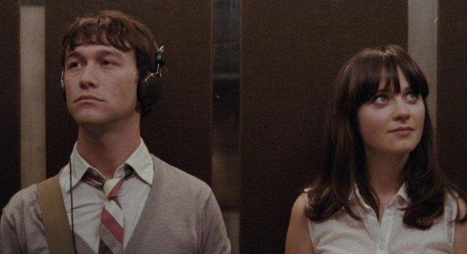

ANGELINA MAUREEN ARIYANE
I made a promise, To distance myself. I took a flight through aurora skies. Honestly, I didn't think about how we didn't say goodbye just see you very soon. It hurts to be something, it's worse to be nothing with you. So I didn't call you for sixteen long days, and I should get a cigarette for so much restraint. No matter how long I resist temptation, I will always lose.
It hurts to be something, it's worse to be nothing with you.
I've done the math, there's no solution. We'll never last. Why can't I let go of this? So, I broke my promise. I called you last night. I shouldn't have, I wouldn't have, if it weren't for the sight of a boy who looked just like you standing out on Melrose Avenue. Lastly, it hurts to be something, it's worst to be nothing with you.
One day, I will stop falling in love with you. Someday, someone would like me like I like you. Until then, I'll drink my coffee, eat my pie, pretend that we are more than friends. Then, of course I'll let you break my heart again. Someday, one day, I will stop falling in love with you. Until I do, I'll be thinking of you. I'll let you break my heart again.